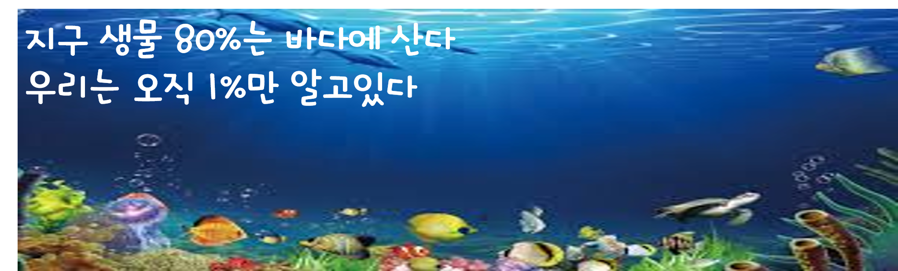

 지구는 다른 행성과 달리 해양을 가지고 있는 것이 특징입니다. 지구 표면적의 70%이상을 차지하고 있는 해양에 엄청난 양의 물이 없었다면 지구는 다른 행성처럼 생명체가 없는 황무지가 되고 말았을 수도 있습니다. 가장 오래된 화석이 해양에서 서식했던 생물의 화석이라는 점, 모든 생물의 대사작용이 수용액 상태에서 진행되는 점, 동물의 혈액 조성이 해수의 화학조성과 유사한 점등은 해양에서 생명이 탄생했음을 시사합니다.